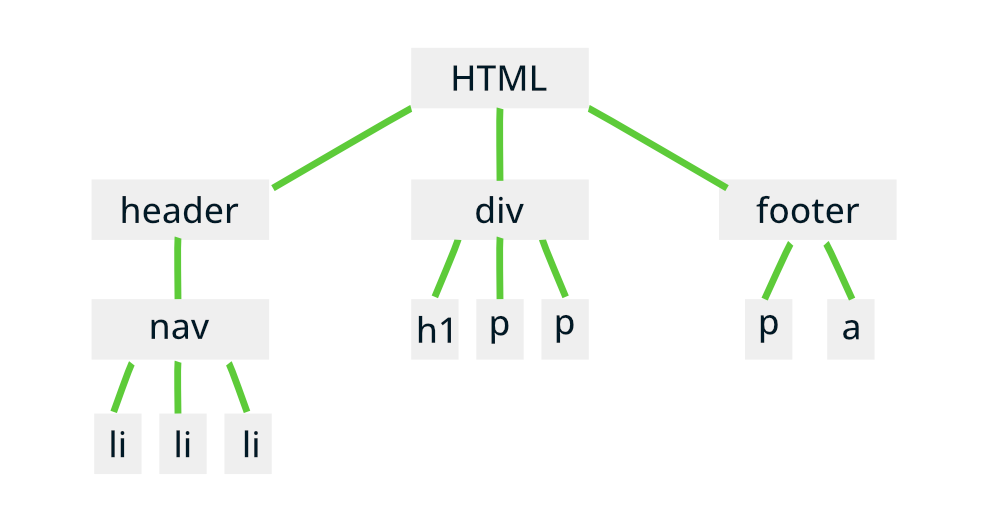
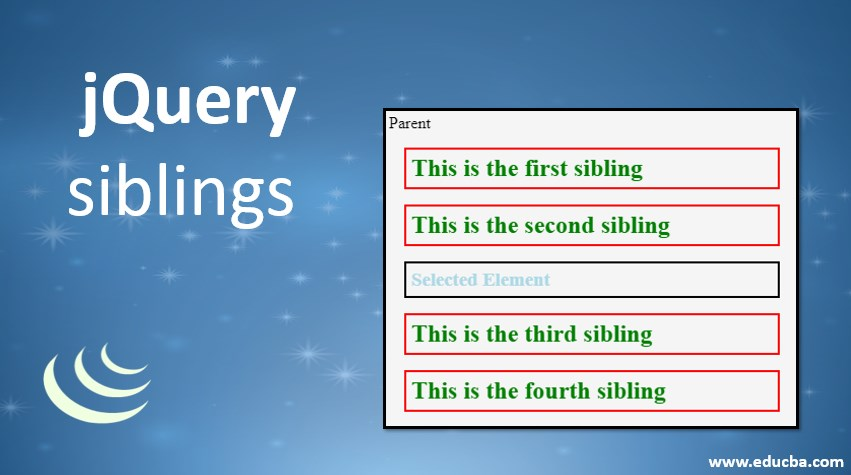

Contenido
Temas

JQuery Traversing - Ancestors
Utiliza el método 'ancestors()' para obtener todos los antecesores de un elemento en el árbol DOM
JQuery Traversing - Descendants
Con el método 'descendants()', puedes acceder a todos los descendientes de un elemento específico en el árbol DOM

JQuery Traversing - Siblings
Explora los elementos hermanos de un elemento dado utilizando el método 'siblings()' en jQuery
JQuery Traversing - Filtering
Aplica el filtrado a los conjuntos de elementos con el método 'filter()' en jQuery, para seleccionar solo aquellos que cumplan con ciertos criterios